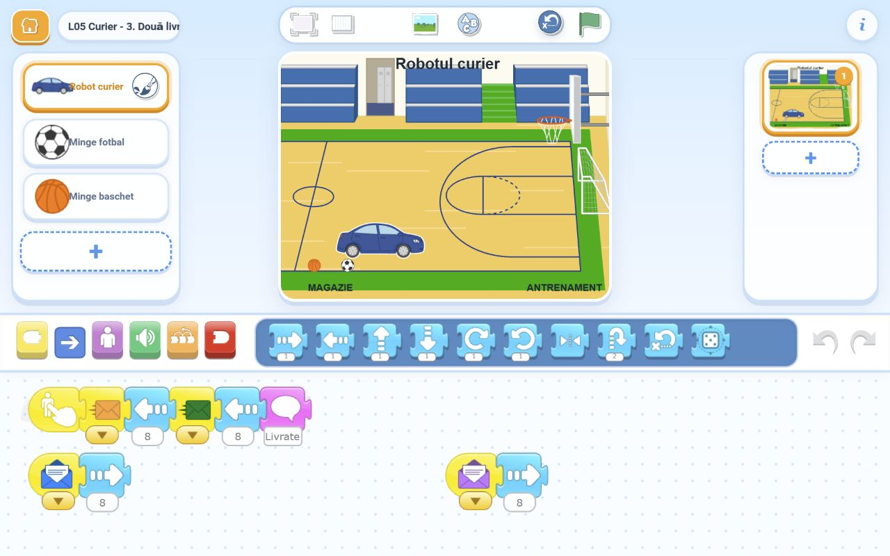

8–18 min
1. Încărcarea corectă
Mingea urcă din magazie și se așază vizibil pe plafon. Vehiculul așteaptă.
Lecția 05 · 60 de minute · robotică pe ecran
În sala de sport începe antrenamentul. Un vehicul automat duce mingile din magazie la teren. Se încarcă, transportă, descarcă și se întoarce gol pentru următoarea comandă.
Toate părțile dificile sunt în lecția de bază, pentru toți. Construim încărcarea precisă, transportul sincronizat, returul și a doua comandă. Cele două rezerve sunt în plus față de oră.
8–18 min
Mingea urcă din magazie și se așază vizibil pe plafon. Vehiculul așteaptă.
18–32 min
Mașina și mingea merg împreună. După descărcare, mașina revine goală.
35–48 min · dificil · în baza lecției
O atingere: fotbal, retur, baschet, retur, apoi „Livrate!”. Fără intervenții între curse.
48–58 min · creație
Alegem alte puncte de încărcare și livrare sau un ocol. Exemplul complet ocolește gardul la dus și la întors.
Rezervă · +5 min
Robotul așteaptă mingea care se încarcă lent. Viteza revine la normal înainte de transport.
Rezervă · +10 min
Baschetul pleacă primul. Schimbăm prioritatea, păstrând cele două retururi și locurile de livrare.
Alegem Gym, Car, Soccerball și Basketball. La ocol adăugăm Fence. Mașina reprezintă un robot curier într-o simulare pe ecran. Nu sunt necesare importuri pe tablete, imagini externe sau sunete.
PDF-ul are 12 pagini: un plan concis, pregătirea și capturi cu toate programele fiecărui personaj, inclusiv părțile dificile, creația și ambele rezerve.

Înainte de fiecare probă: Stop dacă rulează, Reset Characters sus, apoi atinge mașina pe scenă o singură dată. Așteaptă finalul. Steagul nu pornește aceste proiecte. Resetarea readuce și mingile livrate în magazie.
Mingea are propriul cod. Mesajul albastru pornește același transport la mașină și la fotbal; movul la mașină și la baschet. Aceleași mișcări și viteze păstrează încărcătura pe plafon. Mingea nu se atașează automat mașinii.
Scenă fără cod · SJR · Puzzle-ul greu · SJR · Toate cele șapte proiecte
Ce am testat în browser · Instrucțiuni · PDF-ul cursului · lecțiile 1–6
Ghid online vechi · PDF vechi · Cartonașe vechi · Instrucțiuni vechi · Pachet ZIP vechi.